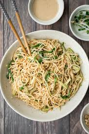

Peanutbutter Noodles

description:
Peanutbutter noodles are very easy to make.
total time for preaparation and cooking: 10 to 15 minutes
ingredients:
- cucumber
- peanutbutter
- soy sauce
- garlic
- noodles, preferably white chinese noodles
- chinese vinegar (optional)
steps:
- you can start by bringing a pot of water to a boil
- while the water is heating up, chop up some cucumber slices
- cut up the garlic into small pieces
- add peanutbutter in a bowl and slowly add water while mixing
- mix peanutbutter until it is smooth and has the consistency of ketchup
- cook your noodles
- mix chopped garlic with the peanutbutter sauce
- add soy sauce and vinegar into the peanutbutter bowl to taste
- once the noodles are cooked through, drain the water and combine with peanutbutter sauce
- add cucumber